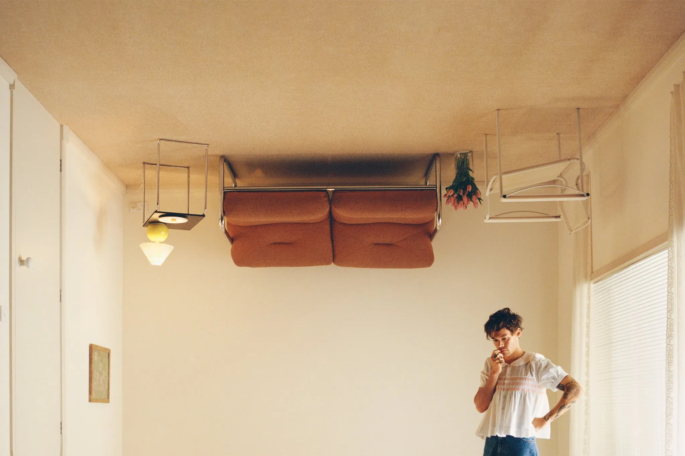

El cantante y compositor Harry Edward Styles nació un 1 de febrero de 1994 en Redditch, Worcestershire, Inglaterra. Sin embargo, creció en Holmes Chapel, Cheshire junto a su madre y su hermana, luego de que sus padres se divorciaron cuando él tenía 7 años de edad.
Durante su adolescencia, Harry Styles formó su primera banda musical llamada White Eskimo, a lado de Nick Clough, Haydn Morris y Will Sweeney con quienes participó en una batalla de bandas de la que salieron victoriosos.
Pero fue hasta 2010 que inició formalmente su carerra musical, cuando apareció en la edición británica del programa The X Factor, en donde, a pesar de no haber obtenido el triunfo, fue elegido para formar parte de la boy band One Direction con la que en 2011 lanzó su primer álbum titulado como Up All Night.
Después de la separación de One Direction en 2017, Harry Styles comenzó una carrera en solitario y emprendió una gira musical llamada Harry Styles: Live on Tour para promocionar su álbum debut.
El primer tema que lanzó fue "Sign Of The Times" y se estrenó un 7 de abril de 2017 en la radio británica.
De cuando pertenecía a One Direction, mi disco favorito es Four

Ahora como solista, mi disco favorito es Harry's House
